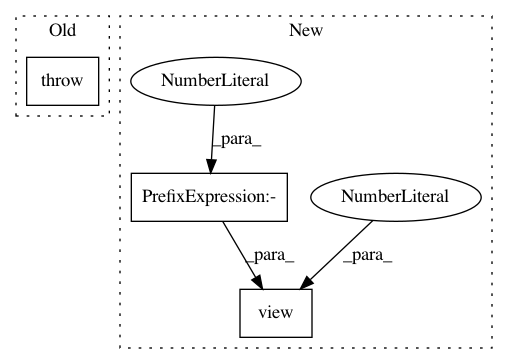

3697053ea6eabb77909d9b43044d784098b48bb9,torch_geometric/nn/models/metapath2vec.py,MetaPath2Vec,__positive_sampling__,#MetaPath2Vec#Any#,72
Before Change
return emb if subset is None else emb[subset]
def __positive_sampling__(self, subset):
raise NotImplementedError
def __negative_sampling__(self, subset):
subsets = []
for keys in self.metapath:
After Change
subset = adj.sample(num_neighbors=1, subset=subset).squeeze()
subsets.append(subset)
out = torch.stack(subsets, dim=-1).to(device)
out.add_(self.offset[1:].view(1, -1))
return out
def __negative_sampling__(self, subset):
In pattern: SUPERPATTERN
Frequency: 3
Non-data size: 3
Instances
Project Name: rusty1s/pytorch_geometric
Commit Name: 3697053ea6eabb77909d9b43044d784098b48bb9
Time: 2020-05-18
Author: matthias.fey@tu-dortmund.de
File Name: torch_geometric/nn/models/metapath2vec.py
Class Name: MetaPath2Vec
Method Name: __positive_sampling__
Project Name: Microsoft/nni
Commit Name: 1cada380ff768d6e59aa4089734cbed74014b9bb
Time: 2019-11-17
Author: v-yugzh@microsoft.com
File Name: src/sdk/pynni/nni/nas/pytorch/enas/mutator.py
Class Name: EnasMutator
Method Name: on_calc_input_choice_mask
Project Name: rusty1s/pytorch_geometric
Commit Name: 6b9ccdbadbca088c0e6b5be1d08848cad0718bbc
Time: 2020-05-31
Author: matthias.fey@tu-dortmund.de
File Name: torch_geometric/nn/models/metapath2vec.py
Class Name: MetaPath2Vec
Method Name: __positive_sampling__